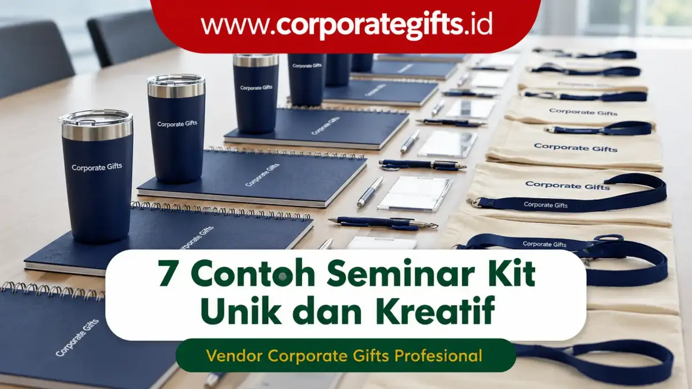

Corporate Gifts ID - Seminar kit unik dan kreatif adalah paket suvenir peserta seminar yang dirancang dengan konsep desain khas, perpaduan material berkualitas tinggi, dan fungsi praktis harian. Paket merchandise seperti tote bag artistik, tumbler ramah lingkungan, hingga piranti digital mampu memperkuat identitas brand perusahaan sekaligus meninggalkan impresi mendalam bagi setiap peserta yang hadir.
Dalam praktiknya, pengadaan paket seminar kit yang dirancang matang bukan lagi sekadar formalitas seremonial. Item suvenir yang tepat menjadi instrumen komunikasi visual berjangka panjang yang mampu memperluas jangkauan promosi (brand recall) bahkan setelah acara selesai.
Poin Kunci Seminar Kit Unik & Efektif:
- Fungsionalitas Tinggi: Memilih produk yang bernilai guna tinggi memastikan merchandise terus dipakai dalam aktivitas harian peserta.
- Sentuhan Personalisasi: Penerapan grafir laser atau sablon presisi logo perusahaan meningkatkan citra profesionalitas penyelenggara.
- Konsep Berkelanjutan: Mengadopsi material eco-friendly mencerminkan komitmen kepedulian lingkungan korporat masa kini.
- Efisiensi Anggaran: Penataan kombinasi produk esensial menghasilkan paket suvenir yang hemat biaya namun berkesan eksklusif.
Definisi & Nilai Strategis Seminar Kit Unik bagi Korporat
Seminar kit inovatif memadukan estetika visual modern dengan utilitas kerja. Ketika peserta menerima cinderamata yang dirancang secara apik, mereka merasakan apresiasi tulus dari pihak penyelenggara. Hal ini secara signifikan mendongkrak skor kepuasan (Net Promoter Score) dari konferensi, simposium, maupun lokakarya yang diselenggarakan.
7 Contoh Seminar Kit Unik dan Kreatif untuk Inspirasi Event Perusahaan
Berikut adalah 7 rekomendasi item seminar kit kreatif yang terbukti efektif meningkatkan antusiasme peserta dan memperkuat branding korporat:
1. Tote Bag Custom dengan Desain Artistik
Tas jinjing tidak hanya berfungsi sebagai wadah distribusi berkas acara, melainkan sarana promosi berjalan yang modis. Memanfaatkan tote bag kanvas premium atau goodie bag spunbond custom dengan ilustrasi grafis tematik membuat tas tersebut sering digunakan kembali untuk keperluan belanja maupun kuliah.
2. Tumbler Ramah Lingkungan (Eco-Friendly SUS 304)
Kesadaran akan kelestarian lingkungan menjadikan botol minum sebagai pilihan suvenir paling favorit. Menggunakan tumbler stainless SUS304 vacuum insulated atau tumbler aksen bambu dengan grafir laser logo korporat memberikan impresi premium dan mendukung gerakan pengurangan sampah plastik sekali pakai.
3. Notebook Agenda dengan Cover Kulit Eksklusif
Mencatat materi seminar terasa jauh lebih berkelas dengan notebook agenda kulit sintetis PU. Sentuhan deboss logo perusahaan pada cover tebal serta kertas bookpaper lembut memberikan kenyamanan ekstra bagi para profesional dan akademisi.
4. Pulpen Metal Custom Grafir Laser
Bagi instansi yang menginginkan cinderamata elegan dengan alokasi biaya yang terukur, paket stationery & pulpen metal adalah pilihan ideal. Bodi logam berbalut grafir nama personal peserta menghadirkan sentuhan personalisasi VIP tanpa membebani anggaran.

Penyusunan paket seminar kit eksklusif dengan wadah pouch organizer multifungsi dan aksesoris gadget modern.
5. Pouch Organizer Gadget Multifungsi
Di era digital, pouch organizer menjadi produk yang sangat dicari. Tas organizer berpartisi ini membantu peserta merapikan kabel charger, earphone, powerbank, flashdisk, dan alat tulis dalam satu tempat yang praktis dan tahan percikan air (water-repellent).
6. Flashdisk Kartu Custom dengan Desain Grafis Penuh
Membagikan materi presentasi, modul pelatihan, dan e-sertifikat menjadi sangat mudah dengan flashdisk kartu custom. Bentuknya yang tipis menyerupai kartu ATM memungkinkan pencetakan foto atau visual acara beresolusi tinggi dengan teknologi cetak UV full color.
7. Merchandise Limited Edition (Apparel & Aksesoris)
Menyematkan busana tematik seperti kaos polo bordir katun pique, topi baseball eksklusif, atau enamel pin custom edisi terbatas mampu menciptakan rasa kepemilikan dan kebanggaan komunitas (sense of belonging) di antara para audiens.
Perbandingan 7 Rekomendasi Seminar Kit & Karakteristiknya
Guna memudahkan tim panitia menentukan komposisi suvenir yang paling pas, berikut tabel komparasi material, fungsi utama, dan tingkat retensi brand dari masing-masing produk:
| Pilihan Seminar Kit | Material Utama | Keunggulan & Fungsi Utama | Segmentasi Budget | Retensi Brand |
|---|---|---|---|---|
| Tote Bag Custom | Canvas Premium / Drill | Kapasitas besar, ramah lingkungan, modis | Ekonomis - Menengah | Sangat Tinggi |
| Tumbler Stainless SUS304 | Double Wall Vacuum Steel | Tahan panas dingin 12-24 jam, bebas BPA | Menengah - Premium | Sangat Tinggi |
| Notebook Agenda Kulit | PU Leather Hardcover A5 | Deboss elegan, nyaman untuk notulensi kerja | Menengah | Tinggi |
| Pulpen Metal Custom | Metal Alloy / Rollerball | Grafir nama personal, awet dan presisi | Ekonomis - Menengah | Tinggi |
| Pouch Organizer Gadget | Cordura / Water-Repellent Canvas | Rapi menyimpan kabel, charger & aksesoris | Menengah | Tinggi |
| Flashdisk Kartu UV | PVC Card Chip Original | Simpan ratusan e-materi, cetak foto full color | Ekonomis - Menengah | Tinggi |
| Apparel Limited Edition | Cotton Pique / Combed 24s | Bordir presisi, membangun identitas komunitas | Menengah - Premium | Sangat Tinggi |
Tips Memilih & Menyusun Paket Seminar Kit yang Tepat
Agar pengadaan cinderamata memberikan laba atas investasi (ROI) promosi yang optimal, ikuti beberapa pertimbangan teknis berikut:
- Pahami Profil & Kebutuhan Audiens: Sesuaikan pemilihan barang dengan demografi peserta, apakah ditujukan untuk level direksi eksekutif, staf operasional, akademisi, atau mahasiswa.
- Pilih Vendor Pengadaan Resmi & Legal: Bekerja sama dengan penyedia berpengalaman seperti CorporateGifts.ID yang menyediakan kelengkapan faktur pajak resmi B2B, jaminan kualitas cetak, dan ketepatan waktu distribusi.
- Prioritaskan Material Tahan Lama: Kualitas material yang kokoh mencerminkan standar kredibilitas dan citra positif perusahaan Anda.
- Pertimbangkan Pengemasan Terpadu (Gift Box): Membungkus paket seminar kit dengan kotak hardbox atau tote bag berdesain selaras akan meningkatkan kesan mewah saat dibagikan.
Pertanyaan Seputar Seminar Kit Unik (FAQ)
Kesimpulan dan Rekomendasi Pengadaan
Seminar kit unik dan kreatif adalah investasi strategis untuk memastikan event perusahaan tidak hanya berlangsung sukses secara operasional, tetapi juga menciptakan dampak branding positif yang membekas di benak peserta. Mulai dari tote bag artistik, tumbler stainless tahan suhu, hingga notebook kulit deboss, setiap elemen suvenir dapat dikonfigurasikan sesuai identitas merek Anda.
Jelajahi ragam opsi produk selengkapnya di E-Katalog Resmi CorporateGifts.ID atau ajukan konsultasi pengadaan langsung kepada tim spesialis kami untuk penawaran harga B2B terbaik.